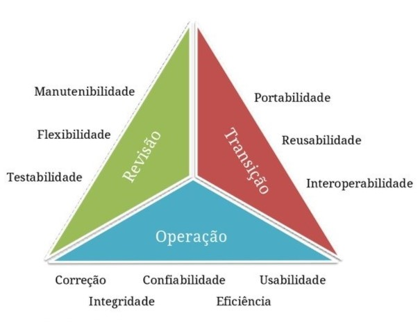
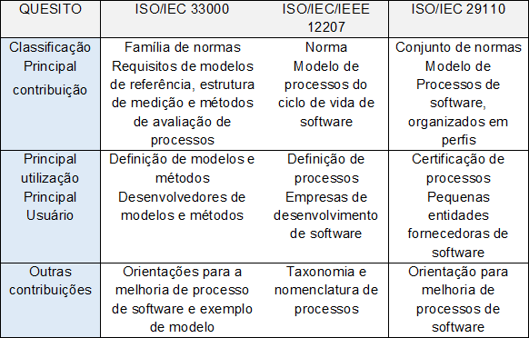

PORTAL DA QUALIDADE DE SOFTWARE
Software é atualmente um produto em grande evidência no mercado, para os mais diversos fins, e observa-se o aparecimento de muitas empresas ligadas à sua criação. Mas por vezes novos desenvolvedores, por diversas razões, não conseguem atender aos quesitos de qualidade exigidos pelo mercado, o que pode comprometer a aceitação do produto e sua comercialização.
Visando a atender esse segmento, propõe-se nesta pesquisa a criação de um website para auxiliar desenvolvedores no uso das boas práticas de qualidade aplicadas ao desenvolvimento de software, voltado para pequenas e médias empresas desenvolvedoras de software. O objetivo geral do projeto, portanto, é desenvolver um guia informativo sobre o assunto, em forma de site.
Site desenvolvido em HTML (Hyper Text Markup Language – Linguagem de Marcação de Texto), CSS (Cascading Style Sheets – Folha de Estilos em Cascata), Javascript (linguagem de scripts para páginas web) para programar a funcionalidade do site e Visual Studio Code para desenvolver as telas e o design e Figma para o layout.
Site dinâmico, com botões de atalhos para assuntos importantes e de interesse comum a todo desenvolvedor. A primeira página traz a ideia principal da necessidade de qualidade em desenvolvimento de software e os botões para navegar pelas páginas secundárias, que abordarão temas como ferramentas da qualidade, normas etc. É possível acessar documentos através de links disponíveis na biblioteca “Temas” e conta também com uma caixa de busca para assuntos específicos.
A proposta justifica-se pela necessidade de oferecer aos desenvolvedores de software informações quanto à política das boas práticas, normas e especificações relevantes para a criação desse tipo de produto. Ele suporta e auxilia o usuário no processo de desenvolvimento, através de consultas a um material normativo, de forma rápida e eficiente, trazendo mais agilidade aos processos, com a finalidade de alcançar a excelência do produto.
Este trabalho se divide em várias partes: Capítulo 1 – Fundamentação Teórica, em que se discutem autores e teorias em que se baseia o projeto; Capítulo 2 – Metodologia, com as questões relativas ao planejamento do trabalho e com as etapas previstas para sua realização; Capítulo 3 – Desenvolvimento, em que é colocado o passo a passo da feitura da parte prática do projeto; por último, as Considerações Finais, com as discussões decorrentes de todo o processo.
Com o objetivo de disponibilizar um site com informações sobre qualidade de software faz-se necessário a apresentação, através da pesquisa bibliográfica, de conceitos sobre o que é qualidade, o que é software, o que é um processo de desenvolvimento de software e o que é qualidade de software, assim como as especificidades que envolvem cada um dos temas.
Além da base teórica para composição dos textos, referências, links etc. das páginas do site, são apresentadas as ferramentas e tecnologias utilizadas para sua elaboração.
- Processo de desenvolvimento de software
- Mercado de desenvolvimento de software
- Profissionais desenvolvedores
- Aspectos gerais da qualidade de software
• Especificação de requisitos:
• Gerenciamento de configuração:
• Usabilidade e experiência do usuário:
Segundo Campos, “um produto ou serviço de qualidade é aquele que atende perfeitamente, de forma confiável, de forma acessível, de forma segura e no tempo certo às necessidades do cliente” (CAMPOS, 2014).
Para Salviano (2020) o entendimento moderno para qualidade advém dos estudos e trabalhos de Walter A. Shewhart, William E. Deming, Joseph M. Juran e Philip B. Crosby.
Dos estudos de Shewhart, Salviano (2020) destaca a existência de dois aspectos para a qualidade, um subjetivo relacionado ao que os seres humanos pensam e sentem, que não pode ser medido e o aspecto objetivo associado a padrões definidos que devem ser melhorados constantemente. Sobre Deming, cita o PDCA (Plan-planejar, Do-fazer, Check-verificar e Act-agir) para a melhoria contínua. Sobre Juran, diz que a gestão orientada à qualidade está baseada em três processos: planejamento, controle e melhoria da qualidade.
Salviano (2020) diz que Crosby introduziu o conceito de que o custo da “não-qualidade”, ou seja, a falta de qualidade, é superior ao valor a ser investido para fazer o certo, e ainda cita os cinco estágios da qualidade de produção: incerteza, despertar, esclarecimento, sabedoria e certeza, que foram utilizados na definição dos níveis de maturidade da capacidade de processos de software do modelo CMM (Capability Maturity Model).
Sobre Crosby, Salviano (2020), destaca ainda que qualidade é a conformidade com os requisitos, qualidade é prevenção e que padrão de desempenho seria zero defeitos.
Para ele, “Princípios da qualidade estão sendo aplicados não apenas em produtos da manufatura, mas também em serviços, governança, dados, estruturação de sistemas, processos e software” (SALVIANO, 2020, p. 21).
Para Pressman e Maxim (2021, p. 4) “o software distribui o produto mais importante de nossa era – a informação”. E colocam como uma possível descrição para software:

Software consiste em: (1) instruções (programa de computador) que, quando executadas, fornecem características, funções e desempenho desejados; (2) estruturas de dados que possibilitam aos programas manipular informações adequadamente; e (3) informação descritiva, tanto na forma impressa quanto na virtual, descrevendo a operação e o uso dos programas (PRESSMAN; MAXIM, 2021, p. 4).
Sommerville (2018) descreve software como programas de computador e documentação associada. Os produtos de software podem ser desenvolvidos para um determinado cliente ou para um mercado genérico. Ele pode consistir em diversos programas diferentes e em arquivos de configuração, que são utilizados para parametrizar esses programas. Também pode incluir uma documentação de sistema, que descreve sua estrutura; manual do usuário, que explica como utilizar o sistema; e sites para os usuários baixarem informações recentes sobre o produto.
Para Gotocobol (2020), todo software é um conjunto interligado de recursos abstratos: conjuntos de dados, algoritmos, funções. Qualquer que seja a forma escolhida para representar esse software, sua essência (seu conjunto de recursos abstratos inter-relacionados) seria a mesma. Em outras palavras, não importa se for desenhado um sistema usando técnicas da Análise Estruturada ou da Orientação a Objetos; não importa se for construído o software em Assembler, em Cobol ou em Swift; a dificuldade essencial de qualquer software estará na concepção correta de todos os recursos abstratos necessários e na correta relação e convivência desses recursos.
Pressman e Maxim (2021) definem “processo de software como uma metodologia para as atividades, ações e tarefas necessárias para desenvolver um software de alta qualidade”, e a engenharia de software engloba não só métodos técnicos de engenharia como considera também as ferramentas automatizadas utilizadas durante o processo. Um processo genérico de engenharia de software estabelece 5 atividades metodológicas: comunicação, planejamento, modelagem, construção e entrega.
No modelo cascata, os requisitos de um problema são bem compreendidos, o desenvolvimento torna-se linear da comunicação à entrega. No modelo de processo de prototipação, são definidas uma série de objetivos gerais para o software sem definir com detalhes os requisitos de entrada. Para versões mais complexas de software, aplica-se o modelo evolucionário que une os aspectos sistemáticos e controlados do modelo cascata à característica iterativa da prototipação, e por último o modelo que surgiu para atender aos princípios de desenvolvimento ágil de software, o UML (Unified Modeling Language), linguagem de modelagem unificada que se tornou um padrão robusto para a indústria de desenvolvimento de software de todos os tipos (PRESSMAN; MAXIM, 2021).
Todos os modelos de processo de software fazem uso das atividades metodológicas, porém, cada modelo enfatiza diferentemente cada uma delas, acomodando inevitáveis alterações que ocorrem durante o desenvolvimento da maneira mais adequada (PRESSMAN; MAXIM).
Assim, o desenvolvimento de software começa a partir da análise de requisitos do sistema, planejamento das etapas, desempenho, definição e cumprimento das metas, divisão e atribuição de trabalhos, definição dos prazos, testes do sistema, implementação e manutenção (IVORY, 2022).
O desenvolvimento de uma linha de produtos de software (LPS), é definida a partir de uma linha de produtos com conjunto de sistemas que usam software e compartilham características comuns e gerenciadas, que suprem as necessidades de um segmento particular de mercado, desenvolvidos a partir de ativos determinados como principais, de forma preestabelecida (DEVMEDIA, 2015).
Uma Linha de Produto de Software (LPS) consiste em uma estratégia de realizar o reuso de componentes de um software ou até mesmo de um software inteiro de forma sistemática para a construção de sistemas com menos esforço desde que estes pertençam a uma mesma família, ou seja, que tenham em comum pertencer a um mesmo domínio de mercado (DEVMEDIA, 2015).
Devmedia (2015) ainda diz que LPS basicamente é um grupo de sistemas que compartilha um conjunto comum de domínios gerenciados por features (funcionalidades ou recursos desenvolvidos por um time de pessoas ligadas as necessidades do usuário de plataformas digitais) desenvolvidos a partir de aglomerados comuns de artefatos base previamente planejados. Esses artefatos consistem em todos os tipos de reutilizáveis como: documentos de requisitos, projeto de arquitetura, componente de software, planos de testes entre outros.
São considerados como produtos de software aqueles que estão diretamente ligados ao usuário e podem ser classificados a partir da forma que é entregue ao usuário (online, não online ou embarcado), de acordo com o que ele faz, na forma de e-mail, comércio eletrônico, pagamento, gestão de conteúdo, educação, comunicação, colaboração, relatório, entretenimento, sistema operacional, ERP (Enterprise Resource Planning), CRM (Custumer Relationship Management) e ainda pode ser observado a partir de para quem o produto resolve o problema (TORRES, 2015).
Assim pode-se ter três tipos de produtos de software, segundo Torres (2015):
O mercado de software no Brasil tem crescido muito nos últimos anos, alguns dados levantados pela Associação Brasileira das Empresas de Software mostram um aumento das vendas de software brasileiros maiores que a média mundial, passando a ser o 11° colocado no ranking das Tecnologias da Informação e da Comunicação conhecida pela sigla TICs (INTELIDATA, 2022).
Em um segmento tão competitivo, inovar se torna obrigatório para crescer e se manter no mercado. Ainda com base nos dados da ABES (Associação Brasileira de Empresas de Software), o setor de TIC obteve um crescimento de 5,0%, já no mercado nacional esse número duplicou chegando a 10,5%, considerados os mercados de software, serviços, hardware e as exportações do segmento (INTELIDATA, 2022).
Para Intelidata (2022), esse crescimento é consequência de uma nova realidade vivenciada por todo o mundo, onde as empresas se viram obrigadas a migrar para o online em curto tempo a exemplo disso vemos a transição das lojas físicas para o virtual e os restaurantes e mercados se adaptarem ao delivery.
Considerando os números e o panorama de vendas, os dados apontam que apesar da crise econômica enfrentada nos últimos anos relacionada à pandemia, o mercado de software promete ser um dos mais promissores e seguros para se investir (INTELIDATA, 2022).
Uma empresa de desenvolvimento de software é focada em desenvolver sistemas, integrações e criação de novas tecnologias. Sendo assim, seu principal produto é o oferecimento de serviços, desenvolvendo, assim, projetos baseados em demandas dos clientes (VOITTO, 2020).
As empresas desenvolvedoras de software dividem suas tarefas de modo a tornar o trabalho mais eficiente e entregar produtos melhor elaborados.
Voitto (2020) destaca que existem funções específicas que desempenham tarefas diferentes relacionadas diretamente à construção do software.
O mercado de desenvolvimento de software está em ascensão e em constante transformação e por isso os profissionais dessa área precisam de atualizações periódicas de maneira que esses profissionais tenham o conhecimento necessário para entregar a melhor solução ao cliente final (VOITTO, 2020).
Voitto (2020) descreve as principais funções dos profissionais que atuam no desenvolvimento de software:
Segundo Portal da Indústria (2023), empresas do setor terciário, aquelas relacionadas ao comércio, telecomunicações, serviços públicos, computação, comunicações e tecnologia, entre outros, no Brasil têm crescido muito e já representam quase 75% do PIB nacional, sendo hoje o maior ramo da economia do país.
Um estudo realizado pela ABES – Associação Brasileira das Empresas Desenvolvedoras de Software o mercado interno cresceu cerca de 10% em 2021 (DIÁRIO DO COMÉRCIO, 2021).
Segundo JRM (2023), o mercado de desenvolvimento é composto por grandes, médias e pequenas empresas startups, como:
A qualidade de software é uma área do conhecimento da engenharia e seu objetivo é garantir a qualidade do software através da definição e normatização de processos de desenvolvimento (KONIA, 2019).
Essa é a área responsável por garantir a implementação do código de acordo com as boas práticas e normas da área, e assim garantir a qualidade e o cumprimento dos requisitos do projeto (TRUECHANGE, 2022).
O desenvolvimento da qualidade de software é a área responsável por avaliar e garantir o desenvolvimento de um software de acordo com as boas práticas técnicas da literatura, cumprindo os requisitos do sistema de acordo com o objetivo final do projeto (TRUECHANGE, 2022).
O desenvolvimento da qualidade de software é a área responsável por avaliar e garantir o desenvolvimento de um software de acordo com as boas práticas técnicas da literatura, cumprindo os requisitos do sistema de acordo com o objetivo final do projeto (TRUECHANGE, 2022).

Dada a relevância do software não só no mundo dos negócios, como também na vida das pessoas, “desenvolver, adquirir, utilizar, manter e evoluir software e seus sistemas e serviços relacionados é cada vez mais importante” (SALVIANO, 2020, p. 8).
Para Sommerville (2018), na sociedade moderna seria um desafio viver sem tecnologia, ela está em todos os lugares, no desenvolvimento e fabricação de produtos, na comunicação, na saúde, no sistema financeiro, no transporte e onde mais a imaginação levar, portanto, a dependência por softwares mais complexos e confiáveis é cada vez maior.
O desenvolvimento de produtos de software, para Sommerville (2018), continua sendo um grande desafio e a engenharia de software vem se desenvolvendo nos últimos anos para se adequar às exigências do mercado. Empresas grandes e estruturadas possuem equipes, metodologia, ferramentas e tecnologia que contribuem para a qualidade e confiabilidade do produto desenvolvido. Independente do porte e dos recursos de que dispõem para desenvolver o software, garantir a sua qualidade, ou seja, que ele atenda aos requisitos do cliente no prazo e custo pré-estabelecidos é o mínimo necessário para que se sobreviva no mercado.
Sommerville, descrevendo a atividade de desenvolvimento de software profissional, menciona que,
os processos de software são complexos e, como processos intelectuais e criativos, dependem da tomada de decisão e do julgamento das pessoas. Uma vez que não existe um processo universal que valha para todos os tipos de software, a maioria das empresas produtoras de software concebeu seus próprios processos de desenvolvimento... Nos casos dos sistemas críticos em segurança, é necessário um processo de desenvolvimento muito estruturado e que registros detalhados sejam mantidos (SOMMERVILLE, 2018, p. 30).
Nesse contexto, para Sommerville (2018), entender o significado de qualidade de software é o primeiro grande desafio para a definição e implantação de um programa de qualidade, assim como conscientizar os desenvolvedores de softwares, sejam autônomos, pequenas, médias ou grandes empresas de que é necessário seguir normas ou padrões.
Salviano (2020) apresenta a qualidade de software sob três aspectos: melhoria de processo, gerenciamento da qualidade e teste de software.
A figura a seguir mostra um resumo com as principais características das normas ISO/IEC 33000, ISO/IEC/IEEE 12207 e normas ISO/IEC 29110 com suas contribuições e principais usuários.

O desenvolvimento de software consiste em um processo complexo, com inúmeras abordagens, que sugerem propostas de gerenciamento em fases bem definidas, visando a uma produção que garanta aos produtos a qualidade desejada por seus clientes. Com base nas várias opções de tecnologia existentes e na crescente demanda em diferentes áreas das sociedades, é essencial que as empresas adotem modelos que permitam avaliar o processo de desenvolvimento e a produção de software (FENNER, 2021).
Salviano (2020, p. 26) diz que “uma das definições para qualidade de software está relacionada com a conformidade do software com seus requisitos”, e entende-se por requisitos aquilo que é esperado do software, as ações que deve executar e os resultados que deve apresentar.
Segundo ProMove (2018), um modelo contendo um conjunto de práticas que servem de referência para que empresas possam melhorar os processos e desempenho no desenvolvimento de produtos e serviços, bem como na prestação de serviços e gerenciamento de fornecedores é o CMMI, que significa Capability Maturity Model Integration (Integração do Modelo de Maturidade de Capacidade).
A finalidade do Modelo CMMI (Integração do Modelo de Maturidade de Capacidade), para a Microsoft (2023), é avaliar a maturidade dos processos de uma organização e oferecer um direcionamento claro e diretrizes sobre como otimizar os processos, com uma meta de produtos aprimorados. Além disso, o CMMI é um modelo de gerenciamento de riscos e fornece uma forma de mensurar a capacidade do gerenciamento de risco de uma organização.
Segundo a ProMove (2021), existem três visões diferentes do modelo CMMI, que são:
Estas três visões do modelo CMMI podem ser utilizadas respectivamente por empresas que desenvolvem produtos de hardware ou software, empresas que prestam serviços de TICs e até outros tipos de serviços como: serviços médicos e educacionais e empresas que gerenciam fornecedores de produtos ou serviços, por exemplo, órgãos públicos que terceirizam a prestação de serviços e o desenvolvimento de sistemas (PROMOVE, 2018).
O Programa MPS.BR (Melhoria de Processo do Software Brasileiro) é um programa da Softex (Organização Social Civil de Interesse Público) que atua nas áreas de tecnologia e informação com o apoio do Ministério da Ciência e Tecnologia e Inovações (MCTI) com o objetivo de melhorar a capacidade de desenvolvimento de software, serviços e práticas de gestão de RH (Recursos Humanos) na indústria de TIC (Tecnologia da Informação e Comunicação). Tendo como foco que os modelos sejam adequados ao perfil de empresas com diferentes tamanhos e características, privadas e governamentais, embora com especial atenção às micro, pequenas e médias empresas, e que também sejam compatíveis com os padrões de qualidade internacionalmente aceitos. Os modelos MPS estão descritos por meio de documentos em formato de guias, disponíveis em www.softex.br (SOFTEX, 2016).
Segundo DevMedia (2013) são listados os 7 níveis de maturidade previstos pelo MPS-BR:
A certificação MPS-BR também tem sido solicitada em licitações governamentais. Logo, empresas interessadas em participar de projetos conduzidos por órgãos do governo podem se utilizar desta metodologia para ampliar seu ramo de atuação.
Konia (2019) diz que qualidade de software analisa dois aspectos do ponto de vista do desenvolvedor: a utilização de técnicas adequadas e boas práticas para o desenvolvimento do sistema, atendendo as exigências estabelecidas pelo cliente, e outro aspecto está ligado a satisfação do cliente quando o custo e o prazo de entrega ou implementação do sistema seguem conforme o combinado. Por esta razão, as normas de qualidade de software são extremamente importantes no processo de desenvolvimento.
É um desafio manter a qualidade no desenvolvimento de software. Sempre que o sistema é atualizado, é necessário ter atenção redobrada para não gerar erros decorrentes das funcionalidades recém-criadas ou fazer com que uma função pré-existente deixe de funcionar. O controle de qualidade é a solução para minimizar esses riscos. Além da menor probabilidade de erros, a redução de custos também é um benefício importante dessa estratégia. Nas práticas que ajudam manter a assertividade do software estão: testes constantes da ferramenta, revisão de códigos e a organização de uma equipe voltada para descobrir possíveis problemas nos sistemas e processos (TECLOGICA, 2022).
De acordo com Teclogica (2022), para manter um bom padrão no atendimento e processos de uma empresa, é preciso se certificar de que o software utilizado mantenha um bom desempenho e permaneça atendendo às demandas, realizando algumas etapas, que são: A) a realização de testes constantes, B) ter uma equipe qualificada e C) criar indicadores de avaliação.
As discussões a seguir detalham essas etapas:
A) Realização de testes constantes: os testes automatizados de unidade é uma ótima forma de fazer o controle de qualidade do software. Feitos por meio de código, essas avaliações são criadas pelos desenvolvedores para testar funcionalidades desenvolvidas. Esses testes devem ser realizados sempre que uma alteração for feita (TECLOGICA, 2022).
O teste de qualidade de software é um conjunto de metodologias e recursos utilizados para avaliar se o software se enquadra nos padrões de qualidade determinados previamente. Dessa forma, ele pode incluir programas utilizados para detectar erros e bugs, processos de revisão das funcionalidades do software, avaliações do grupo em relação ao escopo e objetivos, dentre outros processos. Assim, o teste de software integra processos técnicos, com o uso de ferramentas e programas desenhados especificamente para essa funcionalidade, podendo utilizar checklists (lista de checagem) e revisão por pares. O teste de software também pode incluir atividades relacionadas à legislação, como a LGPD (Lei Geral de Proteção de Dados), com o objetivo de verificar se o produto desenvolvido está dentro do que é exigido por lei (GAEA, 2021).
Esses testes são capazes de evitar retrabalho do time de TIC, pois não são realizados apenas no final do processo, mas são feitos ao longo de todo o processo de desenvolvimento. Dessa forma, são capazes de identificar os erros antes que o código esteja completamente pronto, o que permite uma correção rápida e eficiente por parte do time, sem a necessidade de voltar para o começo do processo e revisar cada uma das linhas do código. Além disso, os testes também são muito importantes para o cliente final, aumentando a satisfação dele com o resultado obtido (GAEA, 2021).
De acordo com Gaea (2021), os principais benefícios do teste de qualidade são:
B) Ter uma equipe qualificada: para a eficácia no desenvolvimento do software, é importante não agir apenas de forma reativa, ou seja, na correção de bugs que surgem no meio dos processos. É preciso ter um time de qualidade preparado para garantir a usabilidade do sistema e sua consistência. Os profissionais atuam periodicamente, monitorando os softwares para checar se alguma falha é encontrada, pois os testes são a maior garantia de que a qualidade dos sistemas será mantida (TECLOGICA, 2022).
C) Criar indicadores de avaliação: manter o controle em dia é investir na criação de indicadores para acompanhar as entregas e o trabalho da equipe de desenvolvedores. Essas métricas permitem identificar pontos fortes (que devem ser mantidos) e pontos fracos (que precisam ser melhorados). Um acompanhamento que pode ser realizado, por exemplo, é a verificação geral dos erros encontrados durante o desenvolvimento do software. Atualmente, a performance de um software está diretamente ligada à qualidade dos processos usados em seu desenvolvimento. Afinal, ter um sistema que funciona corretamente é fundamental para se garantir o sucesso do projeto (TECLOGICA, 2022).
Segundo o mesmo autor, os benefícios de se monitorar o desenvolvimento de software e adotar o controle de qualidade no desenvolvimento dele serve para a redução de custos, pois, ao prevenir e identificar possíveis falhas, é possível corrigir o desvio a tempo e diminuir o impacto posterior. O software passa por processos bem definidos, que devem ser feitos por uma equipe qualificada, garantindo que as entregas sejam feitas de acordo com as solicitações realizadas pela área de negócio.
Qualidade parece um conceito simples de se entender, porém, no desenvolvimento de software, ela exige uma análise mais profunda. Isso porque engloba uma série de elementos, conceitos e testes, sendo determinada tanto a funcionalidade do produto desenvolvido, quanto como é útil para um cliente (GAEA, 2021).
O autor acrescenta que qualidade de software envolve as linhas de código, que devem ser escritas da melhor forma possível, assim como a documentação. Para que um software seja de qualidade também é necessário que ele funcione perfeitamente, sendo que todas as funcionalidades desenvolvidas devem estar adequadas de forma a garantir que poderão ser utilizadas pelo cliente sem maiores problemas. Além de estar relacionada ao escopo do projeto, o software só é de qualidade quando é desenvolvido de acordo com as demandas e necessidades do cliente, se tornando funcional para o consumidor final.
A seguir são apresentadas as discussões relativas ao desenvolvimento deste projeto de pesquisa. A seguir são apresentadas as discussões relativas ao desenvolvimento deste projeto de pesquisa.
Segundo Devmedia (2016), um anúncio no Build (Evento focado em desenvolvedores nos Estados Unidos) e lançado em 2015 pela Microsoft, o Visual Studio Code (VSCode) foi criado para facilitar o desenvolvimento de aplicações web. O Visual Studio Code é um editor de código fonte leve e possui suporte a diversas linguagens de programação, tornando-o ideal para quase todos os tipos de projetos, além disso ele é multiplataforma, estando disponível para Windows, MacOS e Linux, e totalmente gratuito (open source, com seu código fonte disponibilizado no GitHub para que outros desenvolvedores possam contribuir com melhorias para a ferramenta).
Para InfoEscola (2023), HTML (Hypertext Markup Language), ou seja, Linguagem de Marcação de HiperTexto, foi criado em 1991, por Tim Berners-Lee, no CERN (European Council for Nuclear Research) na suíça. Inicialmente o HTML foi projetado para interligar instituições de pesquisa próximas, e compartilhar documentos com facilidade, mas em 1992, foi liberada a biblioteca de desenvolvimento WWW (World Wide Web), uma rede de alcance mundial e junto com o HTML proporcionou o uso em escala mundial da WEB.
Ainda segundo InfoEscola (2023), HTML é uma linguagem de marcação, ou seja, os códigos são responsáveis por determinar o conteúdo da página, usando uma sintaxe própria elas definem o tipo de letra, a cor, o tamanho, a margem etc. No início era muito complexo criar um site, uma simples tabela exigia dezenas de linhas de código, mas conforme o tempo foi passando o html sofreu grandes melhorias, como por exemplo a criação das tags (comandos) que reduziam muito a quantidade de código necessário para criar determinado objeto ou realizar determinada ação, para criar um título por exemplo, era necessário digitar N códigos para que o html identificasse o conteúdo como título, atualmente basta usar uma tag de título digitando “
O mesmo autor ainda diz que para criar ou editar códigos em HTML é necessário qualquer editor de texto como por exemplo o VSCODE (Visual Studio Code) e para visualizar as páginas não é necessária conexão com a internet pois o arquivo está rodando na máquina local.
DevMedia (2016) diz que a linguagem JavaScript foi desenvolvido por Brendan Eich na Netscape e seu nome inicialmente era Moch, mas posteriormente foi alterado para LiveScript e por fim JavaScript. LiveScript foi o nome oficial da linguagem quando foi lançada pela primeira vez na versão beta do navegador Netscape 2.0 em setembro de 1995, mas teve seu nome mudado em um anúncio conjunto com a Sun Microsystems em dezembro de 1995 quando foi implementado no navegador Netscape versão 2.0B3.
O mesmo autor acrescenta que a mudança de nome de LiveScript para JavaScript ocorreu na época em que a Netscape adicionou suporte à tecnologia Java em seu navegador (Applets). O Nome “JavaScript” dá a impressão de que ela foi baseada em Java, mas na verdade era apenas uma estratégia de marketing da Netscape para aproveitar a fama do recém lançado Java.
Ainda segundo o autor, o JavaScript se tornou popular rapidamente como linguagem de script client-side de páginas web, com isso, a Microsoft também desenvolveu um dialeto compatível com a linguagem de nome JScript a fim de evitar problemas com marca registrada. O JScript possuía métodos para consertar os métodos que apresentavam problemas no JavaScript. Foi incorporado no Internet Explorer 3.0 em agosto de 1996.
O JavaScript é uma linguagem de programação interpretada, originalmente implementada como parte dos navegadores web para que scripts pudessem ser executados do lado do cliente e interagissem com o usuário sem a necessidade de passar pelo servidor.
Foi concebida para ser uma linguagem com orientação a objetos baseada em protótipos, tipagem fraca e dinâmica e funções de primeira classe além de possuir suporte à programação funcional e apresentar recursos como fechamentos e funções comumente indisponíveis em linguagens como Java e C++. É baseada em ECMAScript padronizada pela Ecma international nas especificações ECMA-262 e ISO/IEC 16262 e atualmente é a linguagem de programação mais utilizada do mundo (DEVMEDIA, 2016).
O Cascading Style Sheets (CSS) que é a Folha em Estilo de Cascata foi proposto por Hakon Lie em 1994, seu objetivo era criar uma linguagem para facilitar a criação de sites que naquela época era muito complexa. Em 1995 a W3C (World Wide Web Consortium) desenvolveu o CSS1, mas só ganhou devido destaque entre os anos de 1997 e 1999, neste período ficou conhecido por grande parte dos programadores (INFOESCOLA, 2023).
O CSS é uma linguagem de programação responsável pela parte visual de uma página web, ou seja, seu design/aparência, com ele é possível criar páginas web de maneira mais fácil e com um design mais elaborado, podendo alterar: linhas, margem, cores, posicionamento de imagens e objetos, alturas, larguras, tudo isso sem a necessidade de programar no HTML. Atualmente o CSS é utilizado pelos programadores em todo o mundo pois se tornou uma ferramenta muito eficaz e de fácil aprendizado, podendo controlar vários arquivos HTML em um só arquivo CSS. Ambos podem ser criados ou editados em qualquer editor como o VSCode (Visual Studio Code) por exemplo (INFOESCOLA, 2023).
Segundo Alura (2022) o Figma foi desenvolvido por Dylan Dield e Evan Wallace e lançado em 2016, com o objetivo de facilitar a colaboração entre as pessoas e times, tornando o desenvolvimento de produtos mais acessível e permitindo que ele seja desenvolvido para as mais diversas plataformas. O Figma é uma ferramenta gratuita para construção de designs, interfaces e protótipos. Com ele é possível desenvolver a parte visual do produto e testar a viabilidade das telas desenvolvidas usando a ferramenta de prototipagem.
Com essa ferramenta, designers e outros profissionais de todo o mundo podem construir o design de produtos digitais inteiros, como sites, aplicativos para dispositivos móveis (tablets, smartphones ou até mesmo smartwatches), e se quiser, até mesmo as pequenas telas como, por exemplo, temporizador de micro-ondas (ALURA, 2022).
A concepção e desenvolvimento de um software de alta qualidade demanda a incorporação de uma extensa variedade de práticas e considerações essenciais. A seguir, apresentam-se os principais tópicos que requerem minuciosa abordagem, visando assegurar um produto final de inabalável robustez e confiabilidade:
A escolha da arquitetura de software é crucial para o sucesso do projeto. Isso envolve decidir sobre a estrutura global do sistema, incluindo a divisão em componentes, a comunicação entre eles e a distribuição de responsabilidades.
Algumas arquiteturas comuns incluem a arquitetura em camadas (como apresentação, lógica de negócio e persistência), arquitetura cliente-servidor, arquitetura orientada a serviços (SOA) e microserviços.
Os padrões de design são soluções generalizadas para problemas comuns no design de software. Eles fornecem diretrizes e melhores práticas para resolver problemas específicos.
Exemplos de padrões incluem o Modelo-Visão-Controlador (MVC) para separar a lógica de apresentação da lógica de negócio, Modelo-Visão-Modelo de Visão (MVVM) para aplicativos com interfaces de usuário ricas, e Padrão de Repositório para abstrair o acesso a dados.>
- DRY (Don't Repeat Yourself): Evitar duplicação de código promove reutilização e facilita a manutenção.
- SOLID: Um conjunto de cinco princípios de design de software que visam tornar os sistemas mais compreensíveis, flexíveis e fáceis de manter. (Single Responsibility Principle, Open/Closed Principle, Liskov Substitution Principle, Interface Segregation Principle, Dependency Inversion Principle).
- KISS (Keep It Simple, Stupid): A simplicidade é valiosa. Projetos simples são mais fáceis de entender, manter e debugar.
- Princípio da Menor Surpresa: O comportamento do software deve ser previsível e seguir convenções comuns. Surpresas inesperadas devem ser evitadas.
Ao cumprir de maneira diligente e meticulosa com os pontos delineados acima, é possível assegurar que o software em questão alcance um patamar de excelência em termos de qualidade. A abordagem abrangente que abarca desde a concepção até a implementação e manutenção, seguindo boas práticas e princípios fundamentais do desenvolvimento de software, se traduz em um produto final que atende aos mais elevados padrões da indústria.
A aplicação de uma arquitetura sólida, aliada a padrões de design consagrados, estabelece as bases para um software robusto e de alta performance. O compromisso com a eficiência, coesão e baixo acoplamento, fundamentados em princípios como DRY e SOLID, resulta em código limpo, facilmente compreensível e passível de manutenção contínua.
Os testes, por sua vez, desempenham um papel crucial na validação e verificação do software, garantindo que todas as funcionalidades operem conforme o esperado. Desde os testes unitários, que verificam individualmente cada componente, até os testes de aceitação do usuário, que garantem que o software atenda às necessidades reais dos usuários finais, cada etapa contribui para a confiabilidade e confiança no sistema.
Assim, ao adotar e rigorosamente aplicar esses princípios e práticas, é possível assegurar que o software não apenas atenda, mas supere as expectativas em termos de qualidade e desempenho. A busca pela excelência na engenharia de software não é apenas um objetivo, mas um compromisso que resulta em produtos que não apenas funcionam, mas se destacam na eficácia, confiabilidade e satisfação do usuário.